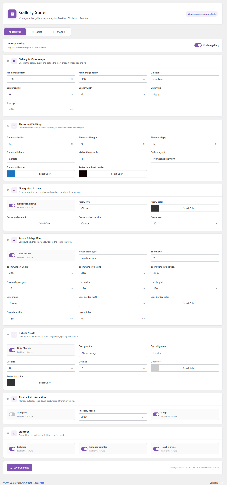
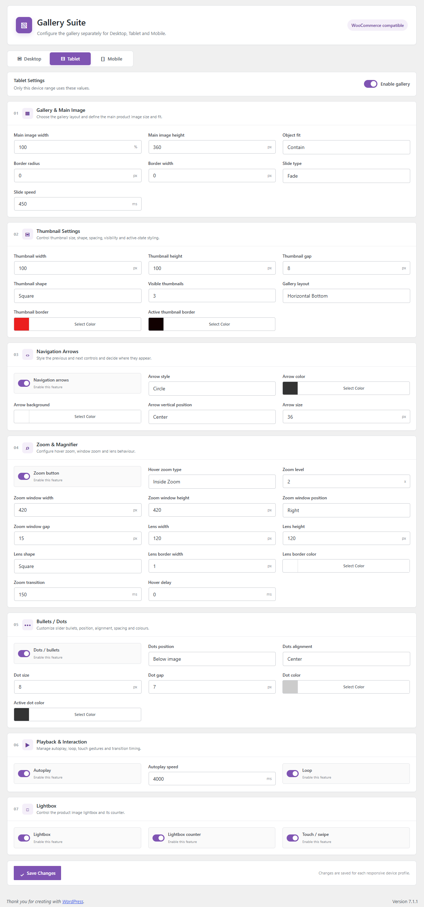
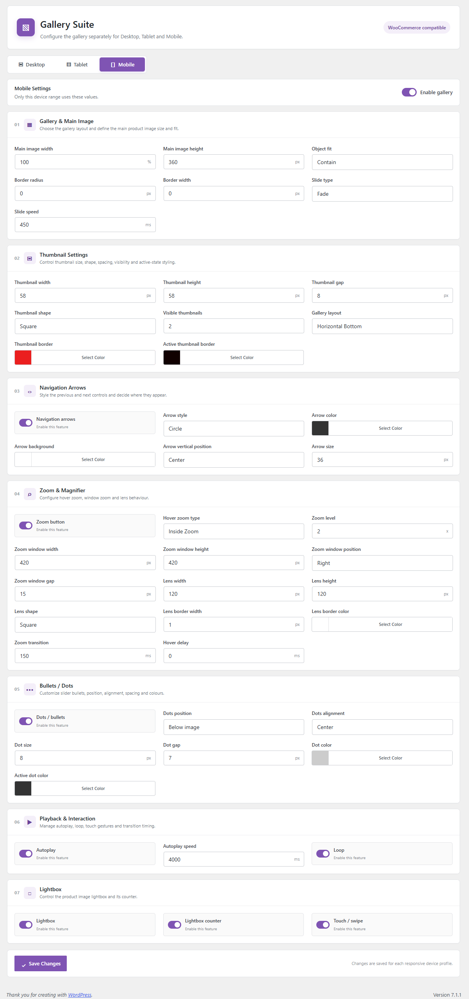

Gallery Suite for WooCommerce
Configure the product gallery, without touching the theme
Gallery Suite replaces nothing — it takes over the existing WooCommerce product gallery
(the same flex-viewport / flex-control-thumbs markup your theme already
renders) and drives it with its own CSS and JavaScript, loaded late enough to win against
theme styles. Every visual and behavioural option is set independently for Desktop, Tablet
and Mobile, from one settings screen.
Installation
- Deactivate and remove any older/broken copy of the plugin first.
- In WordPress → Plugins → Add New → Upload Plugin, upload the plugin ZIP.
- Make sure WooCommerce is active, then activate Gallery Suite.
- On activation the plugin writes sensible defaults for all three device profiles — nothing breaks on a fresh install even before you open the settings screen.
- Open Gallery Suite in the admin sidebar, adjust Desktop, Tablet and Mobile as needed, and click Save Changes on each tab.
- Visit any product page to see the gallery update. Settings only load on single product pages.
Desktop, Tablet and Mobile are independent
Every field on this page is stored three times — once per device profile — so a phone visitor and a desktop visitor can see a completely different gallery layout, thumbnail size and zoom behaviour from the same product. Switching tabs never discards unsaved values in the other tabs; each tab saves and is sanitized on its own.



Enable gallery (top-right toggle on each tab) turns Gallery Suite's control off for that device range only — the theme's default WooCommerce gallery is left untouched when it's off.
How it works, in short
No second gallery
Gallery Suite does not print new markup. It reads the WooCommerce gallery already on the page and re-styles/re-scripts it.
Forces theme support
It force-enables wc-product-gallery-zoom, -lightbox and
-slider theme supports on after_setup_theme, so themes that never
declared gallery support still get the flexslider-style markup Gallery Suite needs.
Loads last, on purpose
Frontend CSS/JS enqueue at priority 99, after normal theme and WooCommerce
gallery assets, specifically so Gallery Suite's rules win without !important wars.
Fancybox for the lightbox
The lightbox, counter and swipe gestures are powered by a bundled Fancybox instance,
captured early so a theme or another plugin can't hijack window.Fancybox later
in the page.
Gallery & Main Image
Choose the gallery layout and define the main product image size and fit.
| Setting | What it does | Options / range | Default |
|---|---|---|---|
| Gallery layout | Where the thumbnail strip sits relative to the main image. | Horizontal Bottom · Horizontal Top · Vertical Left · Vertical Right · Thumbnails Only · No Thumbnails | Horizontal Bottom |
| Main image width | Width of the main image area. | Number, % | 100% |
| Main image height | Fixed height of the main image area. | Number, px | 360px |
| Object fit | How the image fills that box when its aspect ratio doesn't match. | Contain · Cover · Fill · None | Contain |
| Border radius | Rounds the corners of the main image. | Number, px | 0 |
| Border width | Border thickness around the main image. | Number, px | 0 |
| Slide type | Transition effect used when moving between images. | Fade · Slide · Flip | Fade |
| Slide speed | How long the transition animation takes. | Number, ms | 450ms |
Thumbnail Settings
Control thumbnail size, shape, spacing, visibility and active‑state styling.
| Setting | What it does | Options / range | Default |
|---|---|---|---|
| Thumbnail width | Width of each thumbnail. | Number, px | 58px |
| Thumbnail height | Height of each thumbnail. | Number, px | 58px |
| Thumbnail gap | Spacing between thumbnails. | Number, px | 8px |
| Thumbnail shape | Corner treatment applied to every thumbnail. | Square · Rounded · Circle | Square |
| Visible thumbnails | How many thumbnails show at once before the strip scrolls. | Number | 4 |
| Gallery layout | Shared with section 01 — same field, shown again here since it also drives thumbnail placement. | See section 01 | Horizontal Bottom |
| Thumbnail border | Border colour on non‑active thumbnails. | Colour picker | #eb1f1f |
| Active thumbnail border | Border colour on the currently selected thumbnail. | Colour picker | #110101 |
The shipped defaults for the two border colours are a bright red and a near‑black — treat them as placeholders to swap for your brand colours, not a deliberate design choice.
Navigation Arrows
Style the previous and next controls and decide where they appear.
| Setting | What it does | Options / range | Default |
|---|---|---|---|
| Navigation arrows | Master on/off switch for the prev/next controls. | Toggle | On |
| Arrow style | Shape of the arrow button background. | Circle · Square · Minimal · None | Circle |
| Arrow color | Colour of the arrow icon/glyph. | Colour picker | #333333 |
| Arrow background | Fill colour of the arrow button itself. | Colour picker | #ffffff |
| Arrow vertical position | Where the arrows sit vertically over the main image. | Top · Center · Bottom | Center |
| Arrow size | Diameter/size of the arrow buttons. | Number, px | 36px |
Zoom & Magnifier
Configure hover zoom, window zoom and lens behaviour.
| Setting | What it does | Options / range | Default |
|---|---|---|---|
| Zoom button | Master on/off switch for hover‑zoom. | Toggle | On |
| Hover zoom type | Which zoom interaction is used on hover. | Inside Zoom (magnifies in place) · Window Zoom (opens a side panel) · Lens / Magnifier (draggable lens) · Cursor Follow · Disabled · Lightbox (legacy) | Inside Zoom |
| Zoom level | Magnification multiplier. | Number, × | 2× |
| Zoom window width | Width of the zoomed preview panel (Window Zoom mode). | Number, px | 420px |
| Zoom window height | Height of the zoomed preview panel. | Number, px | 420px |
| Zoom window position | Where the preview panel is anchored relative to the main image. | Right · Left · Top · Bottom · Inside | Right |
| Zoom window gap | Space between the main image and the preview panel. | Number, px | 15px |
| Lens width | Width of the magnifier lens (Lens mode). | Number, px | 120px |
| Lens height | Height of the magnifier lens. | Number, px | 120px |
| Lens shape | Outline shape of the lens. | Square · Circle | Square |
| Lens border width | Border thickness of the lens outline. | Number, px | 1px |
| Lens border color | Border colour of the lens outline. | Colour picker | #ffffff |
| Zoom transition | Animation duration when the zoom engages/disengages. | Number, ms | 150ms |
| Hover delay | Wait time before zoom activates after the cursor enters the image. | Number, ms | 0ms |
Bullets / Dots
Customize slider bullets, position, alignment, spacing and colours.
| Setting | What it does | Options / range | Default |
|---|---|---|---|
| Dots / bullets | Master on/off switch for the dot indicators. | Toggle | Off |
| Dots position | Where the dot row sits relative to the main image. | Above image · Below image · Overlay top · Overlay bottom | Below image |
| Dots alignment | Horizontal alignment of the dot row. | Left · Center · Right | Center |
| Dot size | Diameter of each dot. | Number, px | 8px |
| Dot gap | Spacing between dots. | Number, px | 7px |
| Dot color | Colour of inactive dots. | Colour picker | #cccccc |
| Active dot color | Colour of the dot for the currently shown image. | Colour picker | #333333 |
Dots and the thumbnail strip can be enabled together — they aren't mutually exclusive. With Thumbnails Only or No Thumbnails gallery layouts, dots are the easiest visible way to show which slide is active.
Playback & Interaction
Manage autoplay, loop, touch gestures and transition timing.
| Setting | What it does | Options / range | Default |
|---|---|---|---|
| Autoplay | Automatically advances the gallery on a timer. | Toggle | Off |
| Autoplay speed | Delay between automatic slide changes. Uses a single restartable timer so transitions never overlap. | Number, ms | 4000ms |
| Loop | Wraps from the last image back to the first (and vice‑versa) instead of stopping at the ends. | Toggle | On |
| Touch / swipe | Enables swipe gestures to move between images on touch devices. | Toggle | On |
Lightbox
Control the product image lightbox and its counter.
| Setting | What it does | Options / range | Default |
|---|---|---|---|
| Lightbox | Enables the full‑screen image viewer (powered by the bundled Fancybox) when the main image is clicked. | Toggle | On |
| Lightbox counter | Shows a "3 / 8" style counter inside the lightbox. | Toggle | On |
| Touch / swipe | Shared with section 06 — also controls swipe navigation inside the open lightbox. | See section 06 | On |
Troubleshooting
Gallery looks broken — no main image, thumbnails oversized and overlapping
This is the exact symptom the plugin's force_gallery_theme_support() fix targets:
themes that never declared wc-product-gallery-zoom / -lightbox /
-slider support cause WooCommerce to skip its flexslider markup entirely. Confirm
you're on the current plugin version, then hard‑refresh the product page (theme/page caching
can serve the old markup).
Settings changed but the frontend didn't update
Frontend assets only enqueue on single product pages (is_product()). Check you're
viewing an actual product page, not the shop/category listing, and clear any page/object cache.
I changed Tablet settings but Desktop also changed
Each device tab is saved independently in pgs_gallery_settings. If both changed
together, check that a caching layer isn't serving a stale copy of one of the two profiles.
Zoom / lightbox stopped working after adding another plugin
Gallery Suite captures its own Fancybox instance as window.PGS_Fancybox the moment
its script loads, specifically so a later plugin overwriting window.Fancybox can't
break it. If it still breaks, the conflicting script is likely loading before Gallery
Suite's own assets — check load order/priority.
Changelog notes
- Theme‑independent WooCommerce gallery CSS overrides, replacing reliance on theme defaults.
- Neutralized FlexSlider viewport/wrapper transforms and inline slide positioning that could cause blank images mid‑navigation.
- Stable thumbnail, arrow and dot controls now share a single navigation state.
- Autoplay rebuilt on one restartable timer to stop overlapping transitions.
- Frontend assets load at priority 99 so they reliably win over theme/WooCommerce gallery CSS.